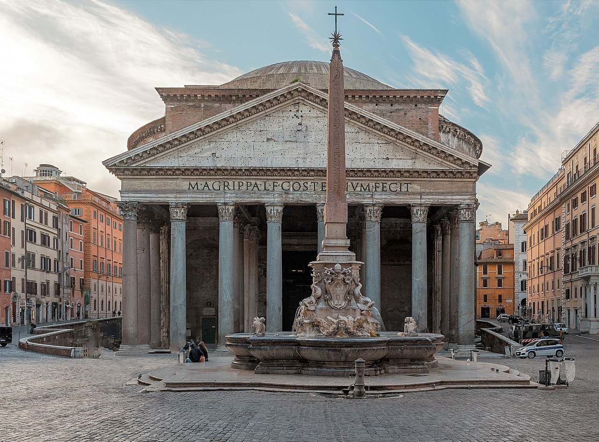
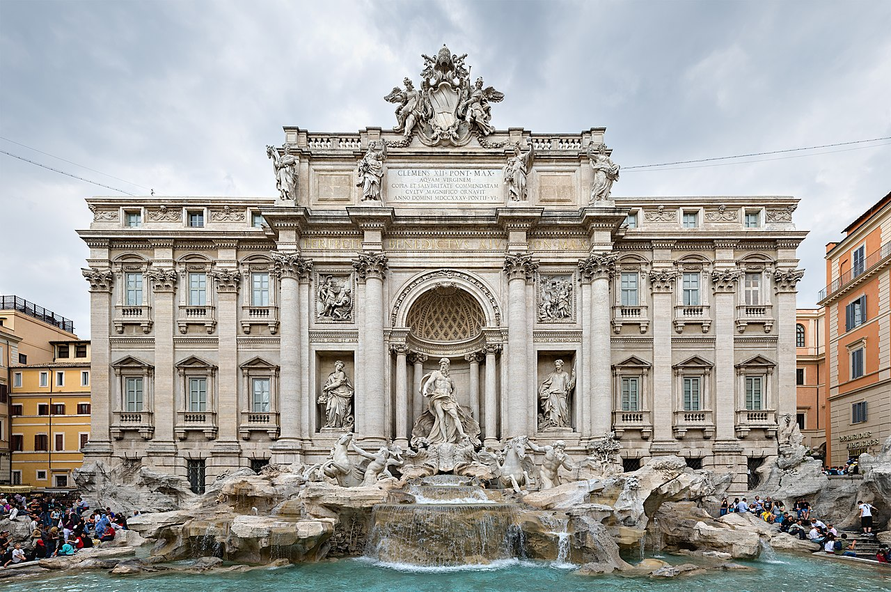

Rome is the capital and largest city of Italy. It is known for its rich history, beautiful architecture, and delicious cuisine. There are many things to see and do in Rome, including:
Places to Visit in Rome
-
The Colosseum
The Colosseum, also known as the Flavian Amphitheatre, is an iconic symbol of Rome and a must-visit destination for any traveler to the city. Built in 80 AD, it was the largest amphitheater ever constructed and could hold up to 80,000 spectators.

-
The Pantheon
The Pantheon is one of the most impressive and well-preserved ancient buildings in Rome, and it's a must-see attraction for anyone visiting the city. Originally built as a temple to all the gods, it was later converted into a church, and it remains an important site of religious and cultural significance to this day.
 -
Trevi Fountain
Rome's largest fountain, Fontana di Trevi is supplied by an aqueduct originally constructed by Agrippa, the great art patron of the first century BC, to bring water to his baths. The fountain was created for Pope Clement XII between 1732 and 1751 by Nicolò Salvi, and built against the rear wall of the palace of the Dukes of Poli
